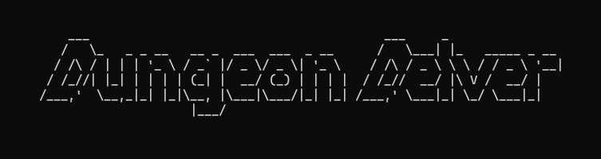
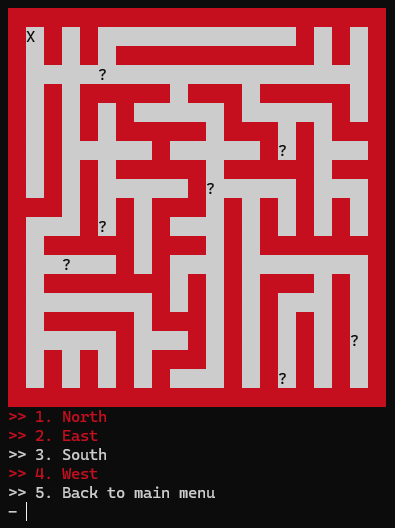
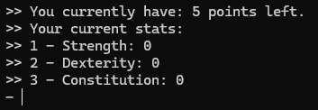

This was my first ever game, fully command line text based. I mainly used number based menus to navigate both the
dungeon and the other menus within the game; however I did use a natural text based menu for the inventory to
allow players to better utilise it, please see below for a deeper view of the game.

Each level is randomly generated using Prims path-finding algorithm and stored within a 2D vector, the program then chooses random points in the maze
to put in a random event (see rooms tab) marked by a '?' for the player to investigate, one of these will be the boss of the dungeon which once killed
will allow the player to move on to the next level.

The character creator and the players character themselves are made up of a variety of parts, first the player spreads 5 points across their stats
Each of them determining a different outcome: